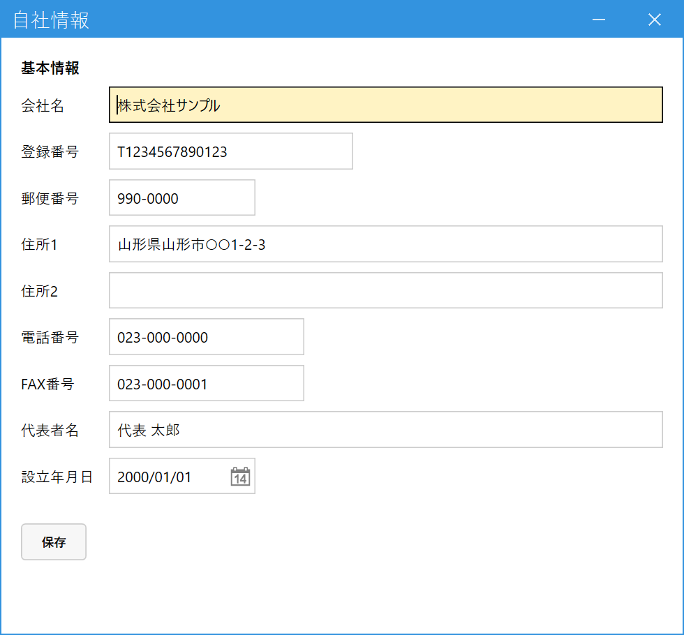

自社情報を登録する（管理者）
こんなときに使います
請求書・明細請求書に印字する自社の名称・住所・登録番号を登録します。最初に1回登録すれば、あとは社名や住所が変わったときだけ直します。
請求書は、インボイス制度に対応した適格請求書の記載事項（登録番号など）を満たす必要があるため、ここが空だと正しい請求書になりません。
請求書・明細請求書に印字する自社の名称・住所・登録番号を登録します。最初に1回登録すれば、あとは社名や住所が変わったときだけ直します。
請求書は、インボイス制度に対応した適格請求書の記載事項（登録番号など）を満たす必要があるため、ここが空だと正しい請求書になりません。
管理者専用の画面です。権限レベル9の社員にだけメニューに表示されます。自社情報は1件だけです（コードで呼び出す必要はなく、開くとすぐ入力できます）。
1.入力して保存する
メインメニューの「マスタ管理」（最初は折りたたまれているので、クリックして開きます）の中の「自社情報」を開きます。登録済みの内容があれば、そのまま表示されます。

- 会社名：請求書の発行元として印字されます。
- 登録番号：適格請求書発行事業者の登録番号（「T」＋13桁の数字）。請求書・明細請求書に印字されます。
- 郵便番号・住所・電話・FAX：請求書の発行元として印字されます。
- 代表者名：得意先マスタで「請求書に代表者印字する」にした得意先宛ての請求書に印字されます。
- 保存：押さないと反映されません。